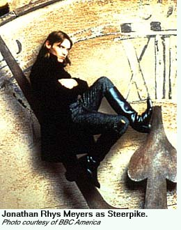
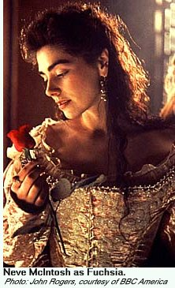

The PBS debut of Gormenghast, one of the most ambitious and creative adaptations in BBC history, begins June 27, 2001 on many public television stations (check your local listings). This four-part fantasy drama features a virtual who's who in British television including Ian Richardson (House of Cards), Stephen Fry, Warren Mitchell, and film veteran Christopher Lee. Based on novelist Mervyn Peake's post-war "Gormenghast" trilogy, it tells the story of the rivalries and traditions amid an immense city-state, and the attempted rise to power of Machiavellian Steerpike (Jonathan Rhys Meyers).Part one introduces us to the citizens of Gormenghast, a fantastic castle, which the BBC created with 120 sets and amazing digital effects. As Titus the 77th Earl of Groan is born, Steerpike begins his ascent, escaping the tyranny of the kitchens, and the cruel Swelter (Richard Griffiths). He ingratiates himself into the service of Prunesquallor (comedian John Sessions), and meets Titus' sister, Fushsia (Neve McIntosh). We know Steerpike is up to no good, but almost like a medieval How To Succeed In Business Without Really Trying, half the fun is watching him maneuver, seduce and work his way up rungs of power.

Reviews in Britain were mixed, and the ratings disappointed the BBC, but Gormenghast clearly is a triumph of design, mood, and character, and certainly proves what would happen if the BBC used its prestigious abilities doing a Masterpiece Theatre-style production and applied it to a sprawling fantasy vehicle. It truly is eye-popping, particularly considering the entire world had to be fashioned from scratch, like a Star Wars movie. Another difficulty is taking a very dense series of novels (in this case, parts of both "Titus Groan" (1946) and the sequel "Gormenghast" (1950) were used) and bring it to life dramatically. Purists, of course, will howl about how much was cut out, while ordinary viewers might be confused what is going on without knowing the background. Nevertheless, for viewers willing to use a little patience and savor the incredible world and situations which have been created, they will be rewarded with fantastic television that is unlike anything else ever attempted.Next page > Behind The Scenes> Page 1, 2, 3